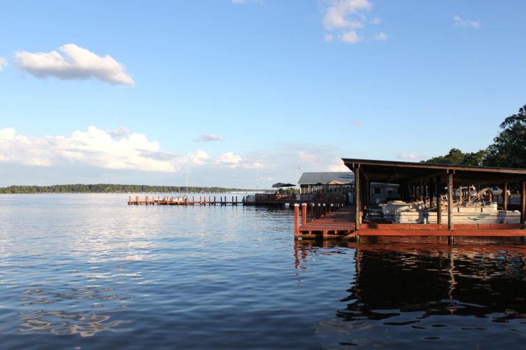
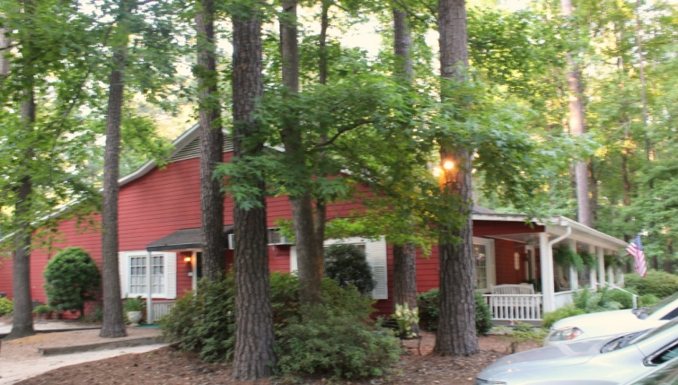

.png)
.PNG)
.PNG)
.PNG)
.PNG)
.PNG)
.JPG)
.JPG)
.PNG)
.PNG)


Happy Weekend to you!  I hope you are at some place fun today. 🙂 Usually at this time of the year I am thinking about the beach…the beach the beach the beach, but this year I seem to be thinking about… the lake.
I think it all started a couple of weeks ago…
 It was the last day of school, and my husband asked me where would I like to go for dinner that night.  I thought for awhile and then remembered a restaurant near Lake Blackshear (Georgia) that we had not been to since the days we had dated (almost 30 years ago!)  I said How about Daphne’s?  His reply was Is that place still open?  So we checked.  Yes it was, and after plugging it into the gps, we were on our way and there in under an hour.
Daphne Lodge (its real name) started its long history back in 1952 as a dance hall, but it is now an awarding winning restaurant that has been featured in many publications including Southern Living, the Atlanta Journal-Constitution, the Washington Post, and even the New York Times. Â Now don’t think this is some fancy place…far from it! Â The parking lot is gravel and sand, and this is near the front steps…
 It is like being in someone’s old home. Â In fact, our daughter said it reminded her of her grandmother’s home.
It is like being in someone’s old home. Â In fact, our daughter said it reminded her of her grandmother’s home.
(And I did see the similarities.)
The food was what made me a fan of Daphne Lodge though. Â Here is the front of the menu with a little history of the place…
and now the real deal menu.
Our waitress (who was excellent by the way) recommended the baked blue cheese chips.  Oh my gosh these were heavenly! Homemade potato chips topped with their house made blue cheese dressing, blue cheese crumbles, chopped tomatoes, and green onions…I think I could live on this dish alone forever! 🙂
It was all the house made items that really showed their attention to detail in each dish. Â After our appetizer, they brought out our salads and a tray with 4 different house made dressings….blue cheese, thousand island, ranch, and a lemon vinaigrette…all very good.
After that, they served us a tray of crackers with homemade garlic butter.  Then our entrees arrived.  My husband had smothered quail.  Our daughter had the smothered quail with country ham, and I had the filet mignon. (Remember I was celebrating the end of school. 🙂 ) Their plates came with a basket of light as air biscuits served with peach preserves. Now don’t shoot me.  I don’t have any photos of the entrees. You see, I did not have my camera with me that night, and the photos of them with the phone were too dark. So how did I get the photos above?  They weren’t from that night.  Huh?  Well, we loved Daphne’s soooo much that night, we took our son and went back again last weekend! This time I had the grilled grouper; our daughter had the baked grouper (best dish of the night which I might get next time!); our son had fried oysters, and my husband had the shrimp and grits.
For dessert the week before, I had a slice of their yummy peanut butter pie with chocolate crumb crust, and our daughter had their key lime pie. Â She repeated it again on our last trip, and our son enjoyed a slice as well.
The restaurant is right down the road from Lake Blackshear. Â The sun had not set when we finished our meal there last weekend, so we drove around looking at the lake and waterfront homes for sale in the area afterwards.
We did not find a home to buy, but here is a cute one to rent on the far end of the lake.
Daphne Lodge is famous for its catfish.  We have not had it yet (maybe tonight!), but click here for the recipe if you would like to try it at home.
Being around the lake and all this fish has made me want to do an old fashioned fish fry. Â I thought this one was cute and full of good ideas.
It was featured in Palate magazine at the end of last summer.
And wouldn’t these towels be perfect for a fish fry?!
(I am keeping them in mind!)
When I was researching ideas for a fish fry, I came across this relatively new restaurant (opened last summer) on Tybee Island.
You can see that it is named Tybee Island Fish Camp. It was opened by the owners of Tybee Island Social Club and is located in a restored 1950’s cabin with its original wood paneling still on the interior.  It is supposed to have some of the freshest fish dishes on the island.  Sounds great to me…but… I suppose it is too far to drive for dinner tonight, right?
Well maybe we will make it back to Daphne Lodge instead. 🙂
Enjoy the rest of your weekend, and don’t forget the big summer tours start Monday morning!
(see the bottom of the post here for details)
Until next time…


.PNG)
You brought back so many pleasant memories! Many years ago Daphne Lodge became one of our favorite places to eat…the atmosphere and food can’t be beat.
We passed by it a few weeks ago and commented that we needed to eat there soon.
One of our dear young friends proposed to his wife to be on the front porch…
Happy Eating…Betty
——————————————————————–
Yes, you need to go back there and enjoy a meal soon Betty! You are so right. You can’t beat the atmosphere and the food..and then you need to drive around the lake while you are there. It has become our weekend fun trip!
How romantic for your friend. I hope she said yes! 🙂
Kelly
I’ll tell you what is worth a drive to Tybee for dinner…the Sundae Café, my all time favorite place to eat!
——————————————————————–
It is!! Delicious fried chicken with that peach salsa/sauce. Best chicken ever!! 🙂
Kelly
Kelly,
The food looks delicious and I love catfish. The restaurant looks like it would be a fun place to visit too.
Yummy.
Have a good week,
Karen
———————————————————————-
It was very good! We are going to take our daughter’s boyfriend with us the next time we go so that he can enjoy it.
Hope your week is off to a great start!
Kelly
Yum…but this was not the post for me to read today. However, I loved it. (I am trying to cut back on calories.) I will focus on the other things I liked…those cute dishtowels and that adorable little lakeside cottage! I think it is so sweet that you went out to dinner at a place you and your husband went to years ago…early in your teaching career, I guess. You are so making me want to take a trip to Tybee Island. Keep posting! Your blog is my favorite!!!
———————————————————————
Oh dear! I am sorry that you are cutting back on calories. Our daughter is trying to get us to start a Paleo diet…NOT fun. Oh well…I am glad you liked those towels. I thought they were so cute! You SHOULD make a trip to Tybee. I keep checking to see when we can make a trip to the beach.
I am so glad the blog is your favorite!!
Kelly
Kelly,
What a great post! I should not read your posts when I am hungry. All the great food @ this restaurant makes me want to go raid the frig.
I love the concrete bunny sitting by the flower pot.
Have a great day!
DiAnne
———————————————————————-
No you should not read this when you are hungry DiAnne! This one was loaded with food!! Wasn’t that a cute flower arrangement in the yard? They also had a wheelbarrow full of geraniums in front of the porch too. Very cute!
Kelly
Love, love, love Daphne Lodge! I haven’t been there in several years, but it has always been a favorite place to eat. I also have good memories of skiing in Lake Blackshear–although that’s been quite a ‘very’ long time ago. I think the last time I skied there was back in my college days. 🙂 Thanks for the suggestion of the Tybee Island Fish Camp. Sound delightful! Next time we head Savannah way, we’ll have to go check it out.
Enjoy your summer!
Take care,
Amy
———————————————————————–
Oh I am so glad you have been there Amy! Isn’t it wonderful?! It sounds like you used to frequent the area. Do check out Tybee Fish Camp the next time you are on the island. I hope we get to try it out too. 🙂
Kelly
Kelly,
I couldn’t agree more. Summer has to be near water. We love our weekends at the lake and enjoy our vacations by the beach.I would love to go eat at both Daphne lodge and Tybee fish camp. They both look like my kind of places! Thanks for sharing them with us! I am glad to see that you are enjoying retirement so far. Keep us posted! Take care!
——————————————————————
Yes,you are right… summer does need to be lived near the water. You have the best of both worlds Dawn – the lake AND the beach! I think you would love both of those restaurants (and plenty more on Tybee.) Retirement has been easy so far!! 🙂
Kelly
I saved you last to open up on my blog email because I knew there would be so much yumminess to look at. But, Girl, you have out done yourself once again! I love the picture of the fireplace with blue transferware and copper. And the food sounds scrumptious. I may have to have those towels for the camper. Hoping there are some catfish fries in this summer? And some lake time. Leaving this open for more cruising later.
Can’t wait to see your summer tour. Wishing you a wonderful, beautiful summer!
——————————————————————–
Aw that was sweet Peggy! Thank you. The food there was scrumptious! Those towels would be just perfect for a camper, so go ahead and order them. 🙂 I was hoping for a fish fry very soon, but our daughter is trying to get all of us on a Paleo diet. ðŸ™
Kelly
I’m with you…Summer just intensifies my feelings for lakeside enjoyment. We use to have a boat years ago, but sold it. Ugh, miss it. Maybe again in retirement. I hope. We still talk about a second little home possibly, but I think in the back of my mind…two homes with yard work and up keep. We’ll see. Those restaurants you featured looked so quaint and fun. I’m salivating again. Yum! Rainy day here….perfect for catching up on some blogs. Yesterday was so busy with the twins, a cook out and fun cupcake making and garden planting… Going to check out more of your post. Palate and that fun backyard party look good. P.S. Thanks for the reply on the Heath brickle recipe. I looked it up on the Net and ended up making it for a Memorial Day cook out we attended. It was so good. Thank you.
———————————————————————–
So sorry you sold your boat Debra! We have canoes and kayaks but nothing with a motor. I have always wanted a small fishing boat with motor, but it doesn’t look like that will happen anytime soon. 🙠And like you, a second home would be nice, but we couldn’t keep it up…hard enough to keep up this one! Your weekend sounds like it was fun. I’m so glad you gave you gave the Brickle dip a try! I would love a spoonful of that right now! 🙂
Kelly
Also, Daphne’s is one of my favorites. Like your daughter, the baked grouper is my choice. Aren’t those salad dressings divine?!!!
———————————————————————
I am getting the baked grouper when we go this weekend! Yum! And yes, those dressings are delicious. 🙂
Kelly
Enjoying my weekend in Italy. Assisi today, then on to Capri tomorrow!
——————————————————————
You lucky lucky girl!! I hope you are enjoying all the wonderful food there as well as the scenery. What a fabulous trip Bonnie!
Kelly
Kelly,
I am definitely at a fun place today on the beautiful island of Maui! We are very fortunate that we are able to annually come here and enjoy island time for awhile. It is much more humid then past years maybe because they received more rain this year, but it’s been a little harder to acclimate to for this Californiaian. I do have Tybee island on my wish list to visit someday as well as other Southern parts of this beautiful country of ours. Take care and aloha, Lindy
———————————————————————–
Oh my goooodness! What a gorgeous place to be visiting! So sorry about the humidity…just think of it as a sauna. LOL I hope you get to make it to the other side of our country one day too Lindy. Tybee is fun (but not up there with Hawaii though!)
Enjoy your trip!
Kelly
Oh, that restaurant sounds sooooooooooo cool and the food perfect. I need to find a new place to explore. Can’t wait for your tour.
———————————————————————
It was so much fun going back to a place we hadn’t seen in decades! And the fact that the food was soooo delicious certainly added to the experience. 🙂 I am enjoying seeing all the tours this week.
Kelly
Fish fries are so much fun outside!! We have done this for many years with our family, friends, school/bank colleagues and church family. Of course being by the lake is just perfect for the theme! Even have had a low country boil on newspaper and once poured it out on the back of the truck tailgate!! Perfect!! Easy to clean up with hose!! You have me wanting fish– will have my haddock next week beachside! Love this lodge– looked so homey and enjoyed reading the history and menu!! Getting ready for Amy Grant concert tonight!! Loving your posts!! Welcome to Almost Summer!! Hoping our Ocala horse will win the Triple Crown!!
———————————————————————
We have never done a fish fry, and I do hope we get to do one this summer (after daughter moves to her apartment and doesn’t harass us about a diet!) If I lived by a lake like you, I would do one every month! I know your Amy Grant concert had to be fun. And hallelujah your horse made the Triple Crown!! How exciting!!!!
Kelly